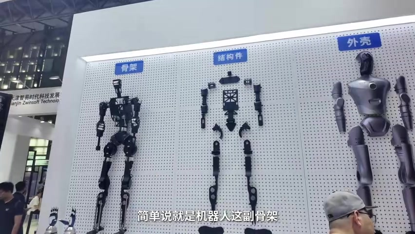
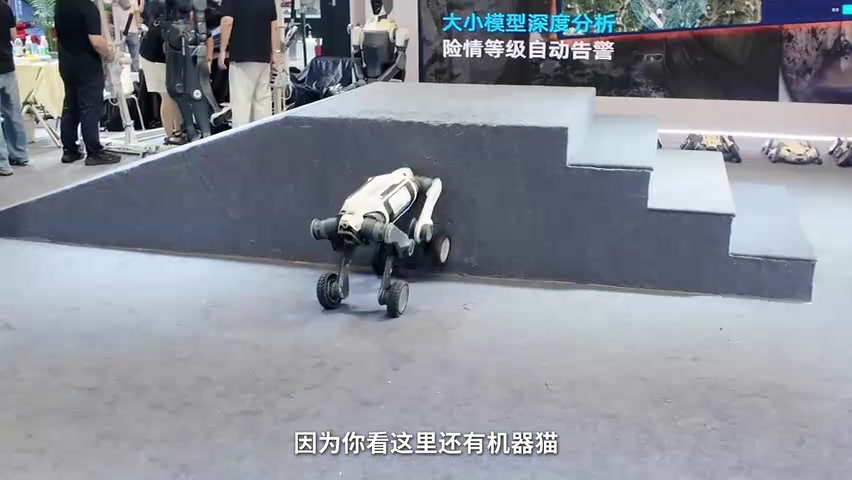
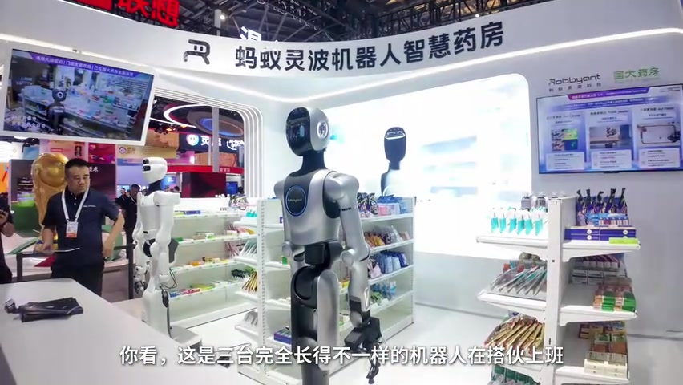

01
中文
我最近总听到这几个词：人形机器人、具身智能、物理AI、世界模型。
EN
Lately I keep hearing these terms: humanoid robots, embodied AI, physical AI, and world models.
表达提示humanoid robots（人形机器人）；embodied AI（具身智能）
Scene English · 科技科普 · 世界人工智能大会
Understand All These Terms in One Visit to WAIC: Robots, Embodied AI, Physical AI, World Models, Agents, and AGI
🎧 语音讲解
Opening: Concepts Nested Like Russian Dolls
情境朋友最近总听到人形机器人、具身智能、物理AI、世界模型这些词，听起来都好厉害但很乱。UP主用一个「套娃」来比喻——这些词是一层套一层的。然后带套娃来到世界人工智能大会现场，把新闻里的词拆成大白话。语域：科普口播，开场设疑。
我最近总听到这几个词：人形机器人、具身智能、物理AI、世界模型。
Lately I keep hearing these terms: humanoid robots, embodied AI, physical AI, and world models.
表达提示humanoid robots（人形机器人）；embodied AI（具身智能）
这几个词其实就像这个套娃，一层套一层。
These terms are actually like this nesting doll — one layer inside another.
表达提示a nesting doll（套娃）；one layer inside another（一层套一层）
把新闻里那些天天念叨的词，给你拆成大白话。
I'll break down all those buzzwords from the news into plain language.
表达提示buzzwords（热词）；plain language（大白话）
拆成大白话 → break into plain language / put it in plain English
一层套一层 → one layer inside another / nested like dolls

Layer One: The Body (Robots)
情境第一个词是一进门就看得见摸得着的本体——机器人这副骨架、胳膊、腿、关节等硬件。长得像人的叫人形机器人，四条腿的叫四足机器人或机器狗，带轮子的是轮式机器人，还有工程里的机械臂——1961年就被发明出来。机器人这个词1920年诞生，今年已经106岁了。语域：科普讲解，实物指认。
本体就是机器人这副骨架、胳膊、腿、关节，这些硬件。
The body is the robot's frame — the arms, legs, and joints, all that hardware.
表达提示the frame（骨架）；all that hardware（这些硬件）
长得像人的叫人形机器人，四条腿的叫四足机器人，一般叫机器狗。
If it looks human, it's a humanoid; four-legged ones are quadruped robots — commonly called robot dogs.
表达提示quadruped robots（四足机器人）；robot dogs（机器狗）
机器人这个词诞生于1920年，今年已经106岁了。
The word 'robot' was coined in 1920 — it's already 106 years old.
表达提示be coined（诞生）；106 years old（106岁）
看得见摸得着 → tangible / right in front of you
骨架胳膊腿 → frame, arms, and legs / the hardware body

Layer Two: Embodied AI
情境光有一副身体不会动，本体一直在等待它的大脑，这就是下一层：具身智能。把四个字拆开——具身就是有身体，智能就是变聪明，合起来就是把聪明装进身体。最早可追溯到1948年图灵写的一份报告，但当时因为推进太慢就放弃了，缺的正是现在的大模型大脑。语域：科普讲解，拆字释义。
具身就是有身体，智能就是变聪明，合起来就是把聪明装进身体。
'Embodied' means having a body, 'intelligence' means being smart — put together, it's putting smarts into a body.
表达提示putting smarts into a body（把聪明装进身体）
最早可以追溯到1948年图灵写的一份报告里，但当时因为推进太慢就放弃了。
It traces back to a report Turing wrote in 1948, but he gave up because progress was too slow.
表达提示trace back to（追溯到）；give up（放弃）
缺一个聪明的大脑，那这个大脑是啥？就是现在的大模型。
It was missing a smart brain — and that brain is today's large language models.
表达提示a smart brain（聪明的大脑）；large language models（大模型）
把聪明装进身体 → put smarts into a body / intelligence inside a body
推进太慢 → progress was too slow / moving too slowly

Cross-Body Robots and the Smart Pharmacy
情境镇馆之宝：玛丽林波的智慧药房，三台完全长得不一样的机器人在大火上班，从问诊抓药到打包全流程不到90秒，而且三副身体用的是同一个大脑——这个词叫跨本体，就是你刚学的那个本体。语域：科普讲解，现场案例。
这是三台完全长得不一样的机器人在大火上班，从问诊抓药到打包，全流程不到90秒。
Three completely different-looking robots work in the pharmacy, from diagnosis and dispensing to packing — the whole flow under 90 seconds.
表达提示the whole flow（全流程）；dispensing（抓药）
而且他们三副身体用的是同一个大脑，这个词叫跨本体。
And all three bodies share the same brain — that's called cross-body.
表达提示share the same brain（共用大脑）；cross-body（跨本体）
跨本体就是同一个智能可以装进不同的身体里。
Cross-body means the same intelligence can be installed in different bodies.
表达提示the same intelligence（同一个智能）；be installed in（装进）
镇馆之宝 → the star exhibit / the crown jewel of the show
全流程 → the whole flow / end to end
World Models and Physical AI
情境说到脑子，最近有个词挺火叫世界模型——它管的是机器人脑子里的那个预演，就是做事之前先在沙盘里推演一遍，想明白了再动手。而能在沙盘里模拟各种物理规律的，就是物理AI。这两个词值得单独讲一期，今天先记下挖个坑。语域：科普讲解，层层递进。
世界模型管的是机器人脑子里的那个预演，就是做事之前先在沙盘里推演一遍。
A world model is the rehearsal in a robot's head — running a sandbox simulation before acting.
表达提示a sandbox simulation（沙盘推演）；rehearsal（预演）
能在沙盘里模拟各种物理规律的，就是物理AI。
The kind that simulates physical laws in the sandbox is physical AI.
表达提示simulate physical laws（模拟物理规律）
这两个词值得单独讲一期，今天先记下，挖个坑。
These two terms deserve their own episode — for today, just file them away, I'm leaving a cliffhanger.
表达提示file them away（先记下）；a cliffhanger（挖个坑）
先在沙盘推演 → run a sandbox simulation / simulate before acting
想明白了再动手 → figure it out first, then act / think before you move
Agents: Tools for the Brain
情境身体有了脑子也装进去了，接下来谁当家干活？下一层是今年全场最活跃的词：智能体。大模型就是那个大脑，智能体就是给大脑装上了眼睛、手和各种工具。它们不仅能思考，还能主动拆解任务、调用工具、完成复杂的工作流程。现场有智能体手机、智能眼镜，还有百度的智能体和南方电网的「大瓦特」。语域：科普讲解，名词对比。
大模型就是那个大脑，智能体就是给大脑装上了眼睛、手和各种工具。
A large model is the brain; an agent is the brain equipped with eyes, hands, and tools.
表达提示equipped with eyes and hands（装上眼睛和手）
他们不仅能思考，还能主动拆解任务、调用工具，完成复杂的工作流程。
They don't just think — they actively break down tasks, call tools, and execute complex workflows.
表达提示break down tasks（拆解任务）；complex workflows（复杂工作流）
你发了一句话，智能体就能自己去点屏幕、输入信息。
You send one sentence, and the agent taps the screen and enters the info itself.
表达提示tap the screen（点屏幕）；enter the info（输入信息）
给大脑装工具 → give the brain tools / arm the brain
当家干活 → take charge and work / run the show
Compute: The Fuel No One Can Skip
情境机器人是智能体最大的一副身体，但不管智能体亲自当家、预编程还是遥控，有一样硬条件谁也绕不开——他们的口粮：算力。这个大铁锅里装着上百台算力卡，阿里的盘9A L128一个柜子塞128张卡，中芯的OEX柜子之间通信成本砍掉八成。机器人又蹦又跳、智能体埋头上班，背后全得靠算力。语域：科普讲解，现场指认。
机器人就是智能体最大的一副身体。
A robot is the biggest body an agent can inhabit.
表达提示the biggest body（最大的身体）
不管智能体亲自当家，还是预编程或者遥控，有一样硬条件谁也绕不开——算力。
Whether an agent runs the show, is pre-programmed, or remote-controlled, one hard requirement is unavoidable: compute.
表达提示a hard requirement（硬条件）；compute（算力）
机器人又蹦又跳，智能体埋头上班，但背后全得靠算力。
Robots jump and dance, agents grind away at work — but behind it all is compute.
表达提示grind away（埋头干活）；behind it all（背后全靠）
硬条件 → a hard requirement / a must-have
口粮 → their fuel / what they run on
The Outer Layer: AGI and a Summary
情境套娃还有一层叫AGI通用人工智能——这是人类给AI许下的最大愿望，不挑活、会下棋也会做饭、像人一样举一反三。你把10万平方米走穿了可能也找不到它的真身，因为它还没有真正的出生。回顾数字：机器人106岁、具身智能78岁、智能体定义31岁、大模型只有9岁。百岁的机器人等来了9岁的大脑，这一场美妙的碰撞正在改写我们的生活。语域：科普口播，哲理收尾。
AGI是人类给人工智能许下的一个最大的愿望：不挑活、不设限，会下棋也会做饭。
AGI is humanity's biggest wish for AI: it doesn't pick jobs, plays chess and cooks alike.
表达提示the biggest wish（最大愿望）；play chess and cook（会下棋也做饭）
你把10万平方米走穿了可能也找不到它，因为它还没有真正的出生。
Walk all 100,000 square meters and you still won't find it — because it hasn't truly been born yet.
表达提示hasn't truly been born（还没真正出生）
百岁的机器人等来了9岁的大脑，而这一场美妙的碰撞，正在彻底改写我们的生活。
A 106-year-old robot finally met a 9-year-old brain — and this beautiful collision is rewriting our lives.
表达提示a beautiful collision（美妙的碰撞）；rewrite our lives（改写生活）
不挑活不设限 → doesn't pick jobs / no limits on tasks
举一反三 → learn from examples / extrapolate from one case
解释具身智能
解释智能体和大模型的关系
说算力不可替代
说AGI还没实现
with smart 中式表达；用 equipped with intelligence / packed with smarts 更地道。
in body 少了冠词；putting smarts into a body 才是自然说法。
click the screen 可用，但 taps the screen（轻触屏幕）更贴手机语境；by itself 用 itself 更简洁。
a big wish to AI 介词错误；用 for AI 或 humanity's wish for AI。